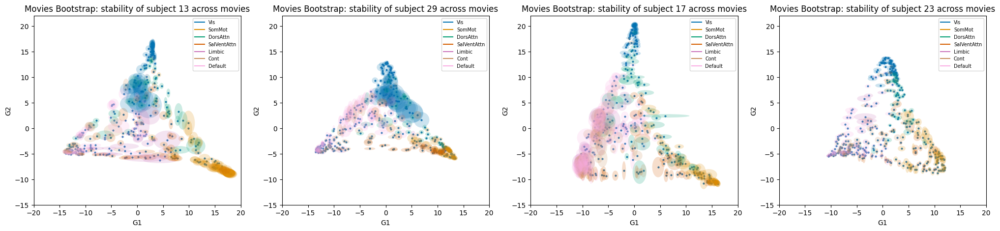
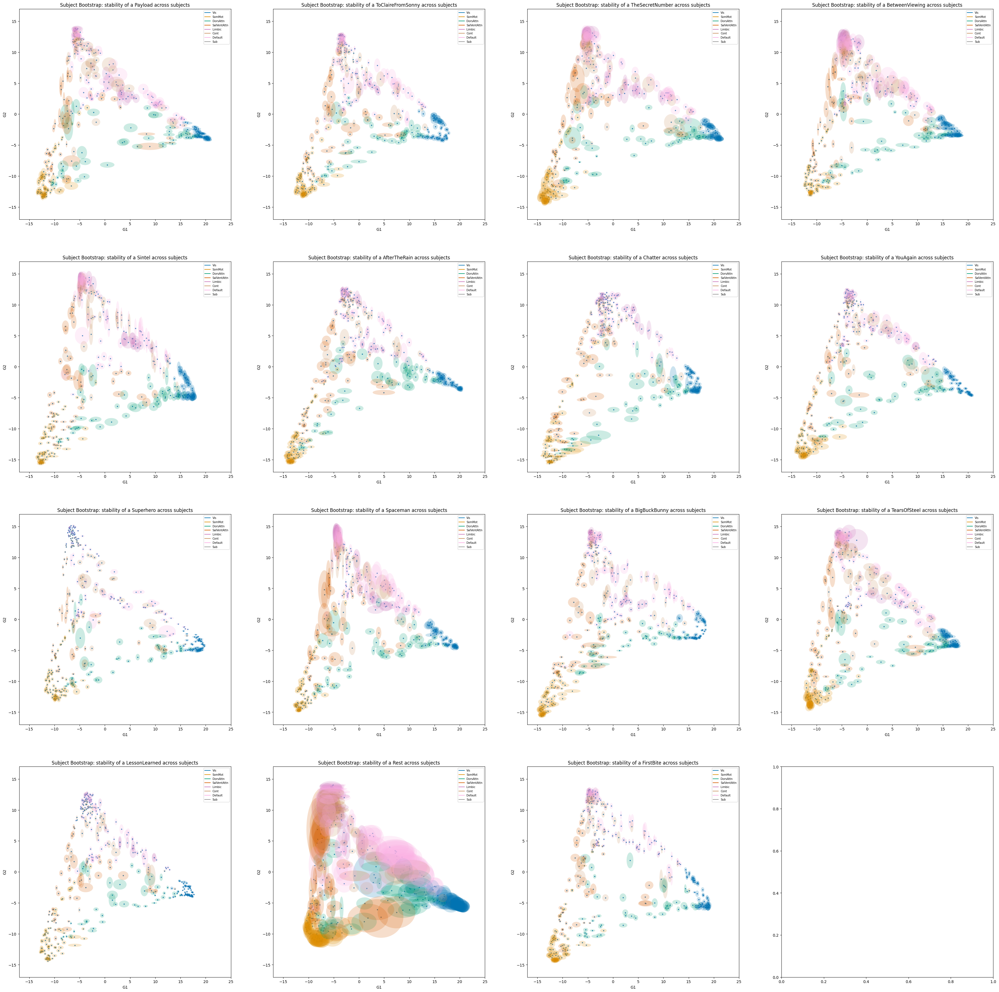
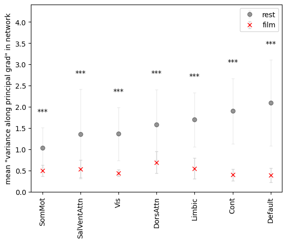
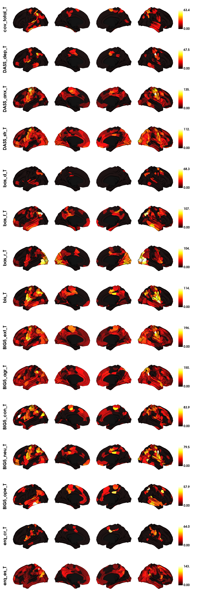
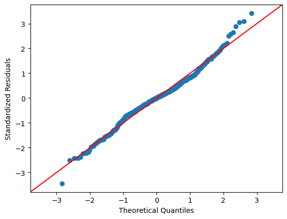
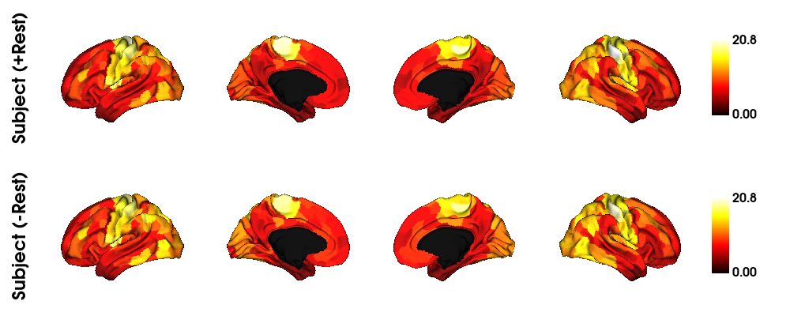
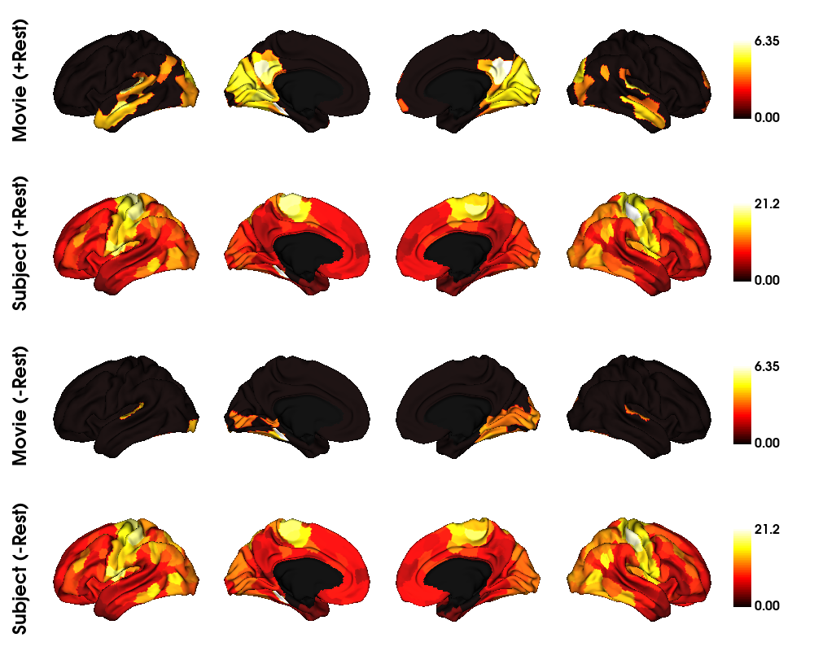
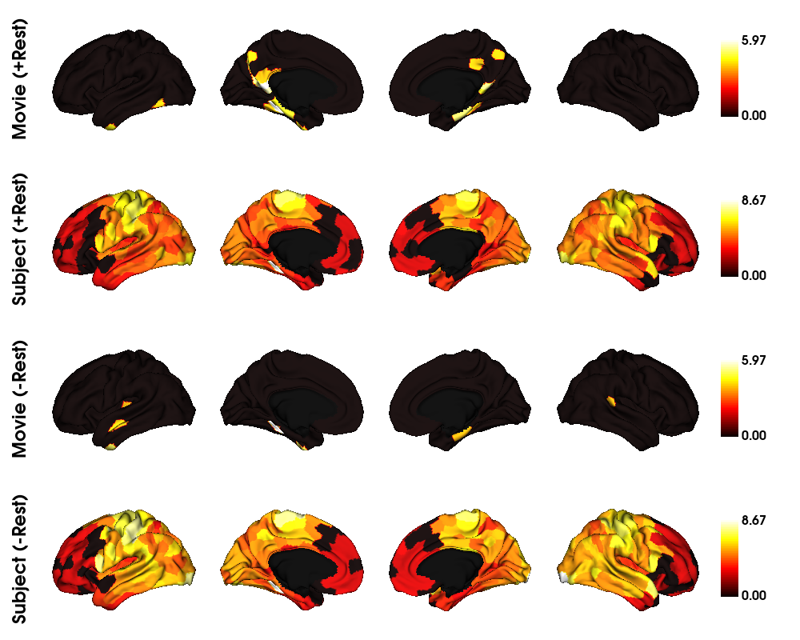

5. Sample Gradient Stability
[1]:
from src import *
import warnings
warnings.filterwarnings("ignore")
/Users/michaelc.c.h/opt/miniconda3/envs/brain2/lib/python3.8/site-packages/tqdm/auto.py:22: TqdmWarning: IProgress not found. Please update jupyter and ipywidgets. See https://ipywidgets.readthedocs.io/en/stable/user_install.html
from .autonotebook import tqdm as notebook_tqdm
[2]:
from bioinfokit.analys import stat
import statsmodels.api as sm
from statsmodels.formula.api import ols
from statsmodels.stats.anova import anova_lm
from pingouin import ancova
Description
Compute subset groups of gradients and see how stable the extracted gradients are for each movies.
GOAL: Evaluate “stability” across subsamples of subjects-generated gradients
Table of Contents
-
Stability across movies
Stability across subjects
[ ]:
embedding = "dm" # diffusion map
aff_kernel = "pearson" #affinity matrix kernel
align_meth = "procrustes"
n_iter = 10 # procrustes align number of iteration
nb_comp = 3
rs = 99
mri_path = "./data/fmri400_compiled/"
print(os.listdir(mri_path))
movie_name = os.listdir(mri_path)[14]
mri_df = pd.read_csv(mri_path + movie_name)
film_duration = FILM2DURATION[movie_name.split('_')[0]] # in seconds
duration_film = int(film_duration/ TR) # in number of TRs
front_pad = int(WASH + ONSET) + 1
Stability
STABILITY ACROSS MOVIES
Generate gradients from subsets of subjects per movie
[20]:
subject = 13
permovie = {}
for f in os.listdir('./data/fMRIFiles/TRFiles/'):
moviename = f.split('_')[-1][:-4]
if moviename == 'Rest': continue
if '400' in f and str(subject) in f:
permovie[moviename] = np.loadtxt('./data/fMRIFiles/TRFiles/{}'.format(f), delimiter=',')
[78]:
np.random.seed(10)
nb_per_sample = 10
movies = list(permovie.keys())
samples_names = []
samples_grad = []
nbs = 100
for _ in range(nbs):
samples_names.append(np.random.choice(movies, nb_per_sample, replace=False))
for i in tqdm(range(nbs)):
concat_series = []
for filename_movie in samples_names[i]:
movie_series = permovie[filename_movie]
movie_series = movie_series[front_pad : front_pad + duration_film]
concat_series.append(movie_series)
concat_series = np.concatenate(concat_series)
fc_movie = FC(concat_series)
g = GradientMaps(n_components=nb_comp, approach=embedding, kernel=aff_kernel, random_state=rs)
g.fit(fc_movie)
samples_grad.append(g.gradients_)
save('./resources/sample_gradsubj/'+str(subject) + '_samples.pkl', samples_grad)
100%|██████████| 100/100 [00:08<00:00, 11.39it/s]
[8]:
samples_grad = []
samples_label = []
for sample in os.listdir('./resources/sample_gradsubj/'):
samples_grad.append(load('./resources/sample_gradsubj/'+sample))
samples_label.append(sample.split('_')[0])
[26]:
from brainspace.gradient import procrustes_alignment
from matplotlib.patches import Ellipse
from matplotlib.colors import ListedColormap
pal = sns.color_palette('colorblind', 8)
my_cmap = ListedColormap(pal)
partial_region = load('./resources/region400yeo7.pkl')
colors = {N: my_cmap.colors[idx] for idx, N in enumerate(list(index2region.keys()))}
_, gref = procrustes_alignment(np.concatenate([np.stack(samples_grad[i]) for i in range(len(samples_grad))]),
return_reference=True, n_iter=100)
fig, axes = plt.subplots(1,4, figsize=(25,5))
aligned_samples = []
for k in range(len(samples_grad)):
aligned,ref = procrustes_alignment(samples_grad[k], return_reference=True, n_iter=100)
aligned = np.asarray(aligned)
aligned_samples.append(aligned)
circle_confusion = aligned.std(axis=0)[:,[0,1]]
# realign now the individual ref to the group ref
ref = procrustes_alignment([ref], reference=gref, n_iter=100)[0]
axes[k].scatter(ref[:,0], ref[:,1], s=4)
for i in range(len(circle_confusion)):
c = partial_region[i]
pts = circle_confusion[i]
m = np.max(pts)
# cc = plt.Circle((ref[i][0],ref[i][1]), m ,alpha=0.5, color=colors[c])
ellipse = Ellipse((ref[i][0],ref[i][1]), width=pts[0] * 2, height=pts[1] * 2,
facecolor=colors[c], alpha=0.2)
# axes[row,col].add_artist(cc)
axes[k].add_patch(ellipse)
axes[k].set_title("Movies Bootstrap: stability of subject {} across movies".format(samples_label[k]), size=12)
C = list(colors.values())
labels = list(colors.keys())
dummies = [axes[k].plot([], [], ls='-', c=c)[0] for c in C]
axes[k].legend(dummies, labels, loc=1, prop={'size':7})
axes[k].set_xlim(-20,20)
axes[k].set_ylim(-15,22)
axes[k].set_xlabel('G1')
axes[k].set_ylabel('G2')
plt.show()

STABILITY ACROSS SUBJECTS
Generate gradients from subsets of subjects per movie
[ ]:
nb_per_sample = 25
subjects = [c for c in mri_df.filename.unique() if '400' in c]
samples_names = []
samples_grad = []
nbs = 100
for _ in range(nbs):
samples_names.append(np.random.choice(subjects, nb_per_sample, replace=False))
for i in tqdm(range(nbs)):
concat_series = []
for filename_movie in samples_names[i]:
movie_series, _ = df_to_timeseries(mri_df, filename_movie)
movie_series = movie_series[front_pad : front_pad + duration_film]
concat_series.append(movie_series)
concat_series = np.concatenate(concat_series)
fc_movie = FC(concat_series)
g = GradientMaps(n_components=nb_comp, approach=embedding, kernel=aff_kernel, random_state=rs)
g.fit(fc_movie)
samples_grad.append(g.gradients_)
# save('./resources/sample_grad/'+movie_name.split('_')[0] + '_samples.pkl', samples_grad)
100%|██████████| 10/10 [02:13<00:00, 13.34s/it]
Visualize Variance across Sampled Gradients for each Movies
[7]:
samples_grad = []
samples_label = []
for sample in os.listdir('./resources/sample_grad/'):
samples_grad.append(load('./resources/sample_grad/'+sample))
samples_label.append(sample.split('_')[0])
[6]:
from brainspace.gradient import procrustes_alignment
from matplotlib.patches import Ellipse
from matplotlib.colors import ListedColormap
pal = sns.color_palette('colorblind', 8)
my_cmap = ListedColormap(pal)
partial_region = load('./resources/region400yeo7.pkl')
colors = {N: my_cmap.colors[idx] for idx, N in enumerate(list(index2region.keys()))}
# colors = {'Vis': my_cmap.colors[idx], 'Default':'tab:orange', 'Cont':'tab:green', 'DorsAttn':'tab:red', 'Limbic':'tab:purple', 'SalVentAttn': 'tab:brown', 'SomMot': 'tab:pink'}
fig, axes = plt.subplots(4,4, figsize=(45,45))
refs = []
for k in range(len(samples_grad)):
_,ref = procrustes_alignment(samples_grad[k], return_reference=True, n_iter=100)
refs.append(ref)
ref_align, _ , _ = procrustes_align(refs)
aligned_samples = []
for k in range(len(samples_grad)):
row,col = k//4, k%4
aligned,_ = procrustes_alignment(samples_grad[k], return_reference=True, n_iter=100)
aligned = np.asarray(aligned)
aligned_samples.append(aligned)
circle_confusion = aligned.std(axis=0)[:,[0,1]]
ref = ref_align[k]
axes[row,col].scatter(ref[:,0], ref[:,1], s=4)
for i in range(len(circle_confusion)):
c = partial_region[i]
pts = circle_confusion[i]
m = np.max(pts)
# cc = plt.Circle((ref[i][0],ref[i][1]), m ,alpha=0.5, color=colors[c])
ellipse = Ellipse((ref[i][0],ref[i][1]), width=pts[0] * 2, height=pts[1] * 2,
facecolor=colors[c], alpha=0.2)
# axes[row,col].add_artist(cc)
axes[row,col].add_patch(ellipse)
axes[row,col].set_title("Subject Bootstrap: stability of a {} across subjects".format(samples_label[k]), size=12)
CN = list(colors.values())
labels = list(colors.keys())
dummies = [axes[row,col].plot([], [], ls='-', c=c)[0] for c in CN]
axes[row,col].legend(dummies, labels, loc=1, prop={'size':7})
axes[row,col].set_xlim(-17,25)
axes[row,col].set_ylim(-17,17)
axes[row,col].set_xlabel('G1')
axes[row,col].set_ylabel('G2')
plt.show()

Quantify Variance across Sampled Gradients for each Movies using ANOVA
[10]:
samples_label
[10]:
['Payload',
'ToClaireFromSonny',
'TheSecretNumber',
'BetweenViewing',
'Sintel',
'AfterTheRain',
'Chatter',
'YouAgain',
'Superhero',
'Spaceman',
'BigBuckBunny',
'TearsOfSteel',
'LessonLearned',
'Rest',
'FirstBite']
[11]:
idx = 13
jdx = 4
rest_grads,_,s = procrustes_align(samples_grad[idx], n_iter=100)
rest_grads = np.asarray(rest_grads)
sintel_grads,_,s = procrustes_align(samples_grad[jdx], n_iter=100)
sintel_grads = np.asarray(sintel_grads)
bootstrap_rest = rest_grads.std(axis=0)[:,0]
bootstrap_sintel = sintel_grads.std(axis=0)[:,0]
[14]:
# Performing two-way ANOVA
yeo2region = load('./resources/yeo7region400.pkl')
networks = list(yeo2region.keys())
df = {"score": [], "cond": [], 'network': []}
for n in networks:
df['score'] += list(bootstrap_rest[yeo2region[n]])
df['score'] += list(bootstrap_sintel[yeo2region[n]])
df['cond'] += ['rest'] * len(yeo2region[n])
df['cond'] += ['movie'] * len(yeo2region[n])
df['network'] += [n] * 2 * len(yeo2region[n])
df = pd.DataFrame.from_dict(df)
model = ols('score ~ C(cond) + C(network) + C(cond):C(network)',data=df).fit()
result = sm.stats.anova_lm(model, type=2)
# Print the result
print(result.to_latex())
\begin{tabular}{lrrrrr}
\toprule
{} & df & sum\_sq & mean\_sq & F & PR(>F) \\
\midrule
C(cond) & 1.0 & 241.658218 & 241.658218 & 701.944217 & 4.910491e-111 \\
C(network) & 6.0 & 24.499767 & 4.083294 & 11.860739 & 9.133746e-13 \\
C(cond):C(network) & 6.0 & 36.687572 & 6.114595 & 17.761055 & 2.294153e-19 \\
Residual & 786.0 & 270.596088 & 0.344270 & NaN & NaN \\
\bottomrule
\end{tabular}
Plot interaction terms details
[15]:
networks
[15]:
['Vis', 'SomMot', 'DorsAttn', 'SalVentAttn', 'Limbic', 'Cont', 'Default']
[20]:
movie_arr[np.argsort(rest_arr[:,0])]
[20]:
array([[0.50303487, 0.13269915],
[0.53748711, 0.20773618],
[0.44377263, 0.08013601],
[0.69431556, 0.25591993],
[0.55211694, 0.23998746],
[0.40053695, 0.13384376],
[0.39672442, 0.16553125]])
[31]:
rest_arr
[31]:
array([[1.038521 , 0.46885049],
[1.36275379, 1.05571663],
[1.36498836, 0.62455011],
[1.58128538, 0.82706473],
[1.70069626, 0.63787402],
[1.90162415, 0.77226634],
[2.09732713, 1.00943094]])
[30]:
rest_arr[:,0]
[30]:
array([1.038521 , 1.36275379, 1.36498836, 1.58128538, 1.70069626,
1.90162415, 2.09732713])
[29]:
order
[29]:
array([1, 3, 0, 2, 4, 5, 6])
[27]:
np.array(networks)[order]
[27]:
array(['SomMot', 'SalVentAttn', 'Vis', 'DorsAttn', 'Limbic', 'Cont',
'Default'], dtype='<U11')
[35]:
# plot of scatter
rest_df = df[df.cond == 'rest']
movie_df = df[df.cond == 'movie']
rest_arr = []
movie_arr = []
for n in networks:
cur = np.array(rest_df[rest_df.network==n]['score'])
rest_arr.append([cur.mean(), cur.std()])
cur = np.array(movie_df[movie_df.network==n]['score'])
movie_arr.append([cur.mean(), cur.std()])
rest_arr = np.asarray(rest_arr)
movie_arr = np.asarray(movie_arr)
order = np.argsort(rest_arr[:,0])
rest_arr = rest_arr[order]
movie_arr = movie_arr[order]
plt.errorbar(list(range(rest_arr.shape[0])), rest_arr[:,0], yerr=rest_arr[:,1], fmt='o', color='black',
ecolor='lightgray', elinewidth=1, capsize=2, alpha=0.4, label='rest');
plt.errorbar(list(range(movie_arr.shape[0])), movie_arr[:,0], yerr=movie_arr[:,1], fmt='x', color='red',
ecolor='lightgray', elinewidth=1, capsize=2, label='film');
# two-sample t-test
import scipy.stats as stats
lheight = []
for idx,n in enumerate(np.array(networks)[order]):
pval = stats.ttest_ind(a=np.array(rest_df[rest_df.network==n]['score']),
b=np.array(movie_df[movie_df.network==n]['score'])
, equal_var=False).pvalue
c1, c2, c3 = int(pval < 0.01), int(pval < 0.005), int(pval < 0.001)
nbstars = c1 + c2 + c3
height = max(rest_arr[idx,0] + rest_arr[idx,1],
movie_arr[idx,0] + movie_arr[idx,1]) + 0.3
lheight.append(height)
plt.text(idx, height,
'*' * nbstars, ha='center', va='bottom')
plt.ylabel('mean "variance along principal grad" in network')
# plt.xlabel('networks')
plt.xticks(list(range(rest_arr.shape[0])),
np.array(networks)[order], rotation=90)
plt.ylim(0,max(lheight) + 1)
plt.legend()
plt.show()

Ancova
[5]:
dct = {}
for file in os.listdir('./resources/static_grad/individual_level/'):
if '414' in file: continue
if 'SUPERMOVIE' in file: continue
tmp = load('./resources/static_grad/individual_level/'+file)
dct[file[:-4].split('_')[0]] = tmp
all_grad = [list(k.values()) for k in list(dct.values())]
all_grad = np.asarray(all_grad)[...,:2]
all_grad = np.concatenate(all_grad)
# Compute reference grad to align on
tmpalign, ref, score = procrustes_align(all_grad)
all_grad = [list(k.values()) for k in list(dct.values())]
all_grad = np.asarray(all_grad)[...,:3]
all_grad = np.concatenate(all_grad)
_, ref3, _ = procrustes_align(all_grad)
Ancova test all personality indexes covariates
[9]:
# Loading behavioural scores
behavioural = pd.read_excel('./data/labels/Behavioural_PSY_scored.xlsx')
existing_psy = list(behavioural.columns[-15:])
# Not Rest specifically
subject_grad = load('./resources/static_grad/individual_level/Rest_grad400.pkl')
subjects = list(subject_grad.keys())
movies = list(dct.keys())
[12]:
# Grad with distance to centroid of 3
cutoff = 0.05/400
grad_per_index = {e:([],[]) for e in existing_psy}
for i in tqdm(range(400)):
df = {"score": [], "Subject": [], "Movie": []}
for m in movies:
for s in subjects:
cur_grad = dct[m][s][:,:3]
cur_grad = procrustes_align([cur_grad], ref=ref3)[0][0]
dist = points_distance(cur_grad[i],cur_grad.mean(axis=0), pmethod="L2")
df['score'].append(dist)
df['Subject'].append(s)
df['Movie'].append(m)
df = pd.DataFrame.from_dict(df)
# add personality indexes as covariates
for i in range(len(existing_psy)):
feat = existing_psy[i]
psyscore = [behavioural[behavioural.ID == _id][feat].item() for _id in list(df['Subject'])]
df[feat] = psyscore
# perform Ancova
summary = ancova(data=df, dv='score', covar=existing_psy, between='Subject')
for i in range(len(existing_psy)):
feat = existing_psy[i]
fval = summary[summary['Source'] == feat]['F'].iloc[0]
pval = summary[summary['Source'] == feat]['p-unc'].iloc[0]
# update non-thresholded grad
grad_per_index[feat][0].append(fval)
# update thresholded grad
grad_per_index[feat][1].append(fval * (pval < cutoff))
100%|██████████| 400/400 [09:34<00:00, 1.44s/it]
[13]:
# For a single movie: plots correlation of parcels versus emotions series
labeling = load_parcellation('schaefer', scale=400, join=True)
surf_lh, surf_rh = load_conte69()
mask = labeling != 0
gs = np.concatenate([np.array(grad_per_index[e][1])[None] for e in existing_psy])
grad = [None] * len(existing_psy)
for k in range(len(existing_psy)):
# map the gradient to the parcels
# gs[k][0] = gs.min()
grad[k] = map_to_labels(gs[k], labeling, mask=mask, fill=np.nan)
plot_hemispheres(surf_lh, surf_rh, array_name=grad, size=(1000, 200 * len(existing_psy)), cmap='hot',
color_bar=True, label_text=[e+'_T' for e in existing_psy], zoom=1.15, embed_nb=True, interactive=False,
transparent_bg=False)
[13]:

ANOVA
Example of 1 Anova test on 1 region/parcel
[14]:
# Generate dataframe for ANOVA
movies = list(dct.keys())
subjects = list(dct[movies[0]].keys())
df = {"score": [], "Subject": [], "Movie": []}
for m in movies:
for s in subjects:
cur_grad = dct[m][s][:,:2]
cur_grad = procrustes_align([cur_grad], ref=ref)[0][0]
dist = points_distance(cur_grad[0],cur_grad.mean(axis=0), pmethod="L2")
df['score'].append(dist)
# df['score'].append(network_volume(cur_grad, "all"))
# df['score'].append(cur_grad[:,1].max()-cur_grad[:,1].min())
df['Subject'].append(s)
df['Movie'].append(m)
df = pd.DataFrame.from_dict(df)
lm = ols("score ~ C(Subject) * C(Movie)", data=df).fit()
reg1 = anova_lm(ols("score ~ C(Subject) + C(Movie)", data=df).fit(), lm)
reg2 = anova_lm(
ols("score ~ C(Subject)", data=df).fit(),
ols("score ~ C(Subject) + C(Movie, Sum)", data=df).fit(),
)
reg3 = anova_lm(
ols("score ~ C(Movie)", data=df).fit(),
ols("score ~ C(Subject) + C(Movie, Sum)", data=df).fit(),
)
res = stat()
res.anova_stat(df=df[['score','Movie']], res_var='score', anova_model='score ~ C(Movie)')
# res.anova_stat(df=df, res_var='score', anova_model='score~C(Movie)+C(Subject)+C(Movie):C(Subject)')
print(res.anova_summary)
res = stat()
res.anova_stat(df=df[['score','Subject']], res_var='score', anova_model='score ~ C(Subject)')
# res.anova_stat(df=df, res_var='score', anova_model='score~C(Movie)+C(Subject)+C(Movie):C(Subject)')
print(res.anova_summary)
[17]:
# credit: https://www.reneshbedre.com/blog/anova.html
# quick verification of assumption for normally distributed residuals
import statsmodels.api as sm
sm.qqplot(res.anova_std_residuals, line='45')
plt.xlabel("Theoretical Quantiles")
plt.ylabel("Standardized Residuals")
plt.show()

F-Score Maps Subject and Movies (cond1: including rest, cond2: not including rest) SCORE: distance to gradient centroid
[53]:
# CONDITION1: including rest
# Generate dataframe for ANOVA
movies = list(dct.keys())
subjects = list(dct[movies[0]].keys())
cutoff = 0.05/400
withrest_fscore = np.zeros((400,2))
for i in tqdm(range(400)):
df = {"score": [], "Subject": [], "Movie": []}
for m in movies:
for s in subjects:
cur_grad = dct[m][s]
cur_grad = procrustes_align([cur_grad], ref=ref3)[0][0]
dist = points_distance(cur_grad[i],cur_grad.mean(axis=0), pmethod="L2")
df['score'].append(dist)
df['Subject'].append(s)
df['Movie'].append(m)
df = pd.DataFrame.from_dict(df)
res = stat()
res.anova_stat(df=df[['score','Movie']], res_var='value', anova_model='score ~ C(Movie)')
# res.anova_stat(df=df, res_var='score', anova_model='score~C(Movie)+C(Subject)+C(Movie):C(Subject)')
if res.anova_summary.iloc[0,-1] < cutoff:
withrest_fscore[i][0] = res.anova_summary.iloc[0,-2]
res = stat()
res.anova_stat(df=df[['score','Subject']], res_var='value', anova_model='score ~ C(Subject)')
# res.anova_stat(df=df, res_var='score', anova_model='score~C(Movie)+C(Subject)+C(Movie):C(Subject)')
if res.anova_summary.iloc[0,-1] < cutoff:
withrest_fscore[i][1] = res.anova_summary.iloc[0,-2]
100%|██████████| 400/400 [00:31<00:00, 12.73it/s]
[54]:
# CONDITION 2: not including rest
# Generate dataframe for ANOVA
movies = list(dct.keys())
subjects = list(dct[movies[0]].keys())
cutoff = 0.05/400
withoutrest_fscore = np.zeros((400,2))
for i in tqdm(range(400)):
df = {"score": [], "Subject": [], "Movie": []}
for m in movies:
if m == "Rest": continue
for s in subjects:
cur_grad = dct[m][s]
cur_grad = procrustes_align([cur_grad], ref=ref3)[0][0]
dist = points_distance(cur_grad[i],cur_grad.mean(axis=0), pmethod="L2")
df['score'].append(dist)
df['Subject'].append(s)
df['Movie'].append(m)
df = pd.DataFrame.from_dict(df)
res = stat()
res.anova_stat(df=df[['score','Movie']], res_var='value', anova_model='score ~ C(Movie)')
if res.anova_summary.iloc[0,-1] < cutoff:
withoutrest_fscore[i][0] = res.anova_summary.iloc[0,-2]
res = stat()
res.anova_stat(df=df[['score','Subject']], res_var='value', anova_model='score ~ C(Subject)')
if res.anova_summary.iloc[0,-1] < cutoff:
withoutrest_fscore[i][1] = res.anova_summary.iloc[0,-2]
100%|██████████| 400/400 [00:29<00:00, 13.58it/s]
[60]:
cranges = [(0,gs[[0,2]].max()), (0,gs[[0,2]].max())]
cranges = [(0,gs[[1,3]].max()), (0,gs[[1,3]].max())]
lbtext = np.array(['Movie (+Rest)', 'Subject (+Rest)', 'Movie (-Rest)', 'Subject (-Rest)'])
# For a single movie: plots correlation of parcels versus emotions series
labeling = load_parcellation('schaefer', scale=400, join=True)
surf_lh, surf_rh = load_conte69()
mask = labeling != 0
gs = np.concatenate([withrest_fscore, withoutrest_fscore], axis=1).T
grad = [None] * 2
for idx,k in enumerate([1,3]):
# map the gradient to the parcels
grad[idx] = map_to_labels(gs[k], labeling, mask=mask, fill=np.nan)
plot_hemispheres(surf_lh, surf_rh, array_name=grad, size=(1000, 400), cmap='hot',
color_bar=True,
label_text=lbtext[[1,3]],
zoom=1, embed_nb=True, interactive=False, transparent_bg=False, color_range=cranges)
[60]:

[59]:
# For a single movie: plots correlation of parcels versus emotions series
labeling = load_parcellation('schaefer', scale=400, join=True)
surf_lh, surf_rh = load_conte69()
mask = labeling != 0
gs = np.concatenate([withrest_fscore, withoutrest_fscore], axis=1).T
grad = [None] * 4
for k in range(gs.shape[0]):
# map the gradient to the parcels
# gs[k][0] = gs.min()
if k in [0,2]:
gs[k][1] = gs[[0,2]].max()
else:
gs[k][1] = gs[[1,3]].max()
grad[k] = map_to_labels(gs[k], labeling, mask=mask, fill=np.nan)
plot_hemispheres(surf_lh, surf_rh, array_name=grad, size=(1000, 800), cmap='hot',
color_bar=True,
label_text=['Movie (+Rest)', 'Subject (+Rest)', 'Movie (-Rest)', 'Subject (-Rest)'],
zoom=1.15, embed_nb=True, interactive=False, transparent_bg=False)
[59]:

F-Score Maps Subject and Movies (cond1: including rest, cond2: not including rest) SCORE: variance of dynamic gradients
[65]:
# CONDITION1: including rest
# Generate dataframe for ANOVA
movies = list(dct_dyn.keys())
subjects = list(dct[movies[0]].keys())
cutoff = 0.05/400
withrest_fscore = np.zeros((400,2))
for i in tqdm(range(400)):
df = {"score": [], "Subject": [], "Movie": []}
for m in movies:
for s in subjects:
dist = dct_dyn[m][s][i]
df['score'].append(dist)
df['Subject'].append(s)
df['Movie'].append(m)
df = pd.DataFrame.from_dict(df)
res = stat()
res.anova_stat(df=df[['score','Movie']], res_var='value', anova_model='score ~ C(Movie)')
# res.anova_stat(df=df, res_var='score', anova_model='score~C(Movie)+C(Subject)+C(Movie):C(Subject)')
if res.anova_summary.iloc[0,-1] < cutoff:
withrest_fscore[i][0] = res.anova_summary.iloc[0,-2]
res = stat()
res.anova_stat(df=df[['score','Subject']], res_var='value', anova_model='score ~ C(Subject)')
# res.anova_stat(df=df, res_var='score', anova_model='score~C(Movie)+C(Subject)+C(Movie):C(Subject)')
if res.anova_summary.iloc[0,-1] < cutoff:
withrest_fscore[i][1] = res.anova_summary.iloc[0,-2]
100%|██████████| 400/400 [00:06<00:00, 57.38it/s]
[66]:
# CONDITION 2: not including rest
# Generate dataframe for ANOVA
movies = list(dct_dyn.keys())
subjects = list(dct[movies[0]].keys())
cutoff = 0.05/400
withoutrest_fscore = np.zeros((400,2))
for i in tqdm(range(400)):
df = {"score": [], "Subject": [], "Movie": []}
for m in movies:
if m == "Rest": continue
for s in subjects:
dist = dct_dyn[m][s][i]
df['score'].append(dist)
df['Subject'].append(s)
df['Movie'].append(m)
df = pd.DataFrame.from_dict(df)
res = stat()
res.anova_stat(df=df[['score','Movie']], res_var='value', anova_model='score ~ C(Movie)')
# res.anova_stat(df=df, res_var='score', anova_model='score~C(Movie)+C(Subject)+C(Movie):C(Subject)')
if res.anova_summary.iloc[0,-1] < cutoff:
withoutrest_fscore[i][0] = res.anova_summary.iloc[0,-2]
res = stat()
res.anova_stat(df=df[['score','Subject']], res_var='value', anova_model='score ~ C(Subject)')
# res.anova_stat(df=df, res_var='score', anova_model='score~C(Movie)+C(Subject)+C(Movie):C(Subject)')
if res.anova_summary.iloc[0,-1] < cutoff:
withoutrest_fscore[i][1] = res.anova_summary.iloc[0,-2]
100%|██████████| 400/400 [00:06<00:00, 65.03it/s]
[67]:
# For a single movie: plots correlation of parcels versus emotions series
labeling = load_parcellation('schaefer', scale=400, join=True)
surf_lh, surf_rh = load_conte69()
mask = labeling != 0
gs = np.concatenate([withrest_fscore, withoutrest_fscore], axis=1).T
grad = [None] * 4
for k in range(gs.shape[0]):
# map the gradient to the parcels
# gs[k][0] = gs.min()
if k in [0,2]:
gs[k][1] = gs[[0,2]].max()
else:
gs[k][1] = gs[[1,3]].max()
grad[k] = map_to_labels(gs[k], labeling, mask=mask, fill=np.nan)
plot_hemispheres(surf_lh, surf_rh, array_name=grad, size=(1000, 800), cmap='hot',
color_bar=True, label_text=['Movie (+Rest)', 'Subject (+Rest)', 'Movie (-Rest)', 'Subject (-Rest)'], zoom=1.15, embed_nb=True, interactive=False,
transparent_bg=False)
[67]:

The Kernel crashed while executing code in the the current cell or a previous cell. Please review the code in the cell(s) to identify a possible cause of the failure. Click <a href='https://aka.ms/vscodeJupyterKernelCrash'>here</a> for more info. View Jupyter <a href='command:jupyter.viewOutput'>log</a> for further details.
[ ]: